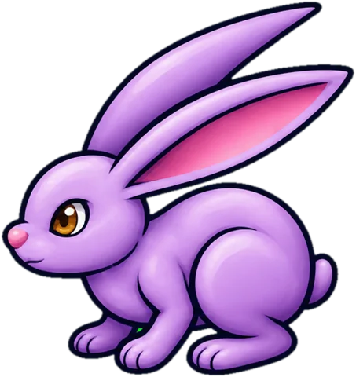

 Psychic
Psychic Light
LightTap a stage to read its story.
Velkit is a small lavender-pink rabbit sitting compactly with its round body, long upright ears, and two bright rosy eyes. Its fur has a soft iridescent sheen and its nose twitches constantly as it reads the light patterns scattered through the Psychic Temple canopy. It sits very still and then vanishes in a flicker, reappearing three body-lengths away with no sound in between. Scholars who study it have never been able to find the moment it actually moves - it simply is one place, then another.
Field note: Velkit blinks between positions so fast that slow-movement studies have logged it covering two metres in zero measurable time.
Light Grove. Velkit and its family are found in the Light Grove. See everyone who lives there.
Share a Bond Food that matches its types to become friends. Velkit loves:
A Bond Food is not a trick. It joins your spirit with the Kimuro's spirit, and only when it chooses you.
Print the Kimuro adventure packs: mazes, cards, a board game and Bond Mark medals.
See the printable packs